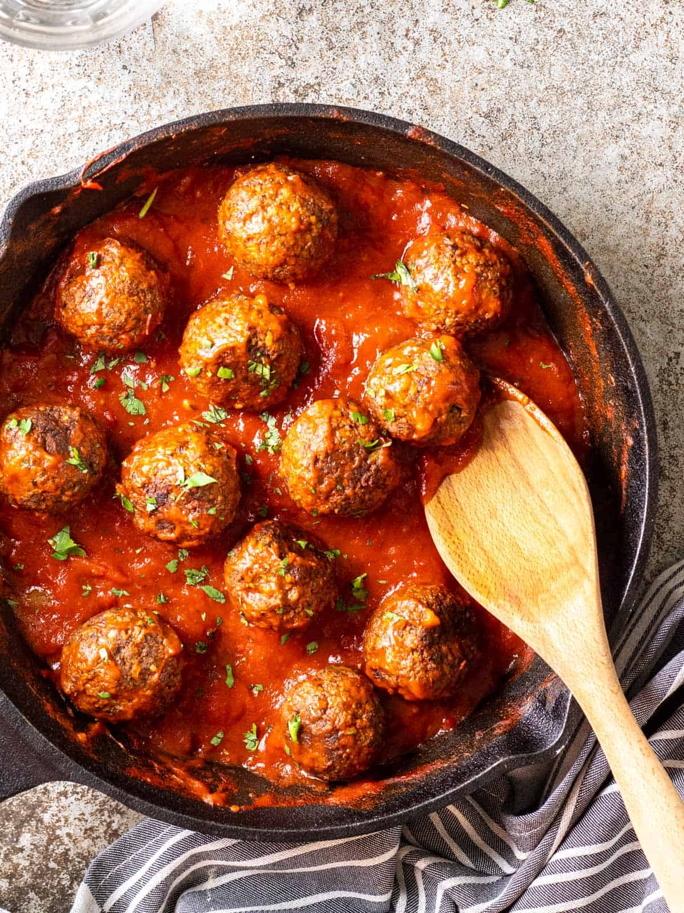

Meatballs

The Best Meatballs
Searching for the best meatball recipe ever? You've come to the right
place. These meatballs are tender, juicy, and full of flavor.
Ingredients
- 1 pound ground beef
- ½ pound ground veal
- ½ pound ground pork
- 1 cup freshly grated Romano cheese
- 2 eggs
- 2 cloves garlic, minced
- 1 ½ tablespoons chopped Italian flat leaf parsley
- salt and ground black pepper to taste
- 2 cups stale Italian bread, crumbled
- 1 ½ cups lukewarm water
- 1 cup olive oil
Steps
Combine beef, veal, and pork in a large bowl. Mix in cheese, eggs, garlic,
parsley, salt, and pepper.
Add bread crumbs and slowly mix in water, 1/2 cup at a time, until mixture
is moist but still holds its shape (I usually use about 1 1/4 cups of
water); shape into meatballs.
Heat olive oil in a large skillet; add meatballs in batches and cook until
browned on all sides, slightly crisp, and cooked through, about 10 to 15
minutes. Drain on paper towels.